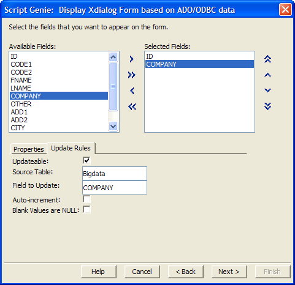
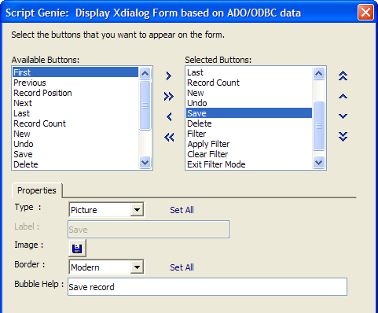
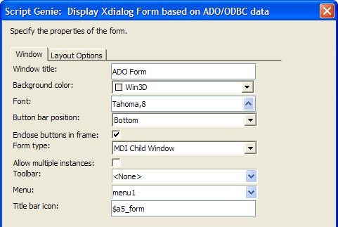
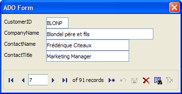
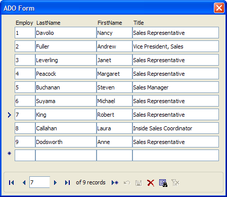
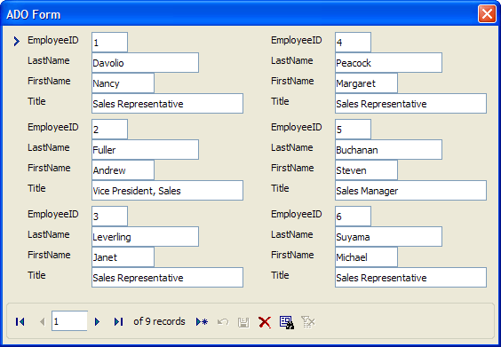
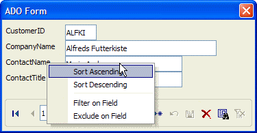
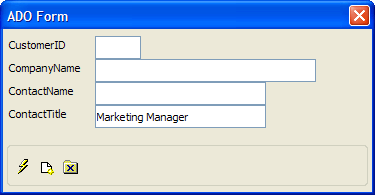

ADO/ODBC Form Genie
The ADO/ODBC Form Genie creates an Xdialog dialog box that can be used to read, write, and browse through ADO and ODBC compliant databases. The form is highly customizable and can be displayed in traditional browse and form formats, as well as a new hybrid format, called a repeating form.
The ADO/ODBC Form Genie is available through Action Scripting. To display the genie:
Navigate to the Code tab of the Control Panel.
Click
 .
.Click
 .
.Select "Xdialog Windows" from the Category list and "Display Xdialog Form based on ADO/ODBC data" from the Action list.
The genie supports two types of external database connections.
Microsoft Access .MDB files
Other databases that support the ADO or ODBC protocols (specified by an ADO Connection string). Picture
{kind=link}

Once you open a connection to the database, you can select data by:
picking a table or view from a list
entering a SQL Select statement
If you are opening a database with an ADO Connection string, you can:
Select an existing connection string
Build a new connection string (using the Windows Data Link Properties dialog box)
If you create a new connection string, the Data Link Properties dialog box gives you the opportunity to select among the following database types.

In addition, if you retrieve the data by table or view, you can optionally apply both filter and order expressions to the record selection.

Next, the genie allows you to pick which fields you want to display.
 Note : You must include
the primary key(s) of the table in the list of Selected
Fields.
Note : You must include
the primary key(s) of the table in the list of Selected
Fields.
This page of the genie allows you to set their order of appearance and various display properties, including:
Label
Hot Label
Control type (text box, list box, etc.)
Width
Height
Tab Page

In addition, you can specify Update Rules for each field. These rules include:
Whether the field is read-only or write-able
The table and field to update (if write-able)
Whether to auto-increment the value of the field
Whether blank values will be represented by NULL

Then, you can select which of 15 available record navigation controls, function buttons, and status fields you would like to display, and set their order of appearance. These buttons include:
First, Previous, Next, Last
Record Position, Record Count
New Record, Save Record, Delete Record
Undo Edits
Filter, Apply Filter, Clear Filter, Show All, Exit Filter Mode
Close
You can also set their display properties, including:
Type (Picture, Text)
Label (if Text)
Image (if Picture)
Border (if Picture)
Bubble Help text

Next, you can set the properties of the form, including:
Window title
Background color
Font
Button bar position ("Bottom", "Top", "Bottom and Top", "None")
whether to enclose the buttons in a frame
Form type ("Modal", "Modeless", "MDI Child Window")
If not "Modal", whether to allow multiple instances
If "MDI Child Window", the toolbar, menu, and Title bar icon to use

You can set various layout options. The style of display can be either:
Form
Table
If you select the "Form" style, you can have a Repeating Form. In this case you can specify:
the number of rows
the number of columns
and whether the forms are organized from:
top to bottom, then left to right
left to right, the top to bottom
This is a familiar single record form.

The following is an example of a Table style form. You can set the number of lines to display in the table.

This is a repeating form. If you added a new record, the form would display records 2 through 7.

Clicking on a field label produces a menu that lets you:
Sort the record set on the selected field in ascending order
Sort the record set on the selected field in descending order
Filter on the field (select only records with matching values)
Exclude on the field (select only records with non-matching values)

Clicking the Filter by Form icon  clears the fields of the form and allows you to make queries
against the record set. The following picture show a query in process.
Clicking on the run icon
clears the fields of the form and allows you to make queries
against the record set. The following picture show a query in process.
Clicking on the run icon  will extract a subset of the
record set that you can scroll through, read, and edit. Clicking
will extract a subset of the
record set that you can scroll through, read, and edit. Clicking  removes the filter and re-displays the full record set. Picture
removes the filter and re-displays the full record set. Picture
{kind=link}
